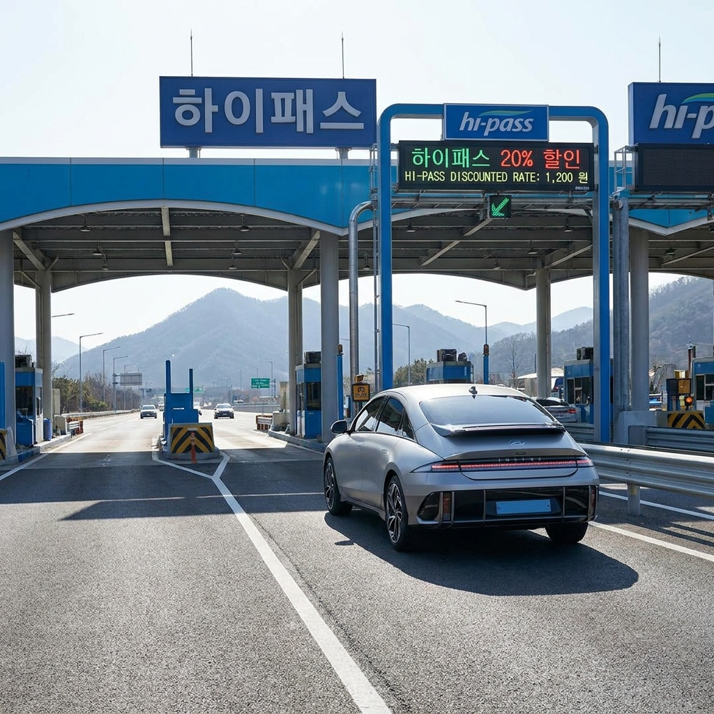
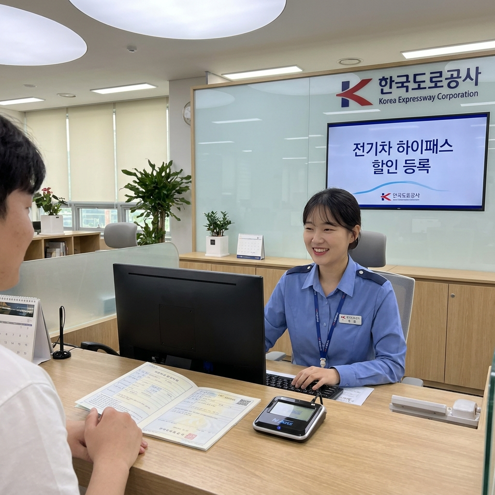

전기차·수소차 고속도로 통행료 감면율과 하이패스 단말기 등록 방법 — 2026년 30% 축소 기준과 등록 절차
전기차와 수소차의 고속도로 통행료 감면 혜택은 2027년까지 연장되었으나, 2026년 현재 감면율은 기존 50%가 아닌 30%로 축소 적용 중입니다.
정부의 유료도로법 시행령 개정에 따라 친환경차 통행료 일몰 기한이 연장되는 대신 감면율이 매년 단계적으로 인하되고 있습니다. 또한 일반 단말기를 장착한 상태에서는 할인이 전혀 적용되지 않으며, 반드시 한국도로공사에 친환경차 전용 할인코드를 등록해야 정상 감면을 받을 수 있습니다. 변경된 할인율 기준과 단말기 등록 절차를 상세히 안내해 드립니다.

고속도로 하이패스 전용 차로를 통과하는 친환경 전기차 / AI 제작 이미지
01 | 친환경차 고속도로 통행료 감면 제도 연장과 2026년 핵심 변경점
국토교통부와 한국도로공사는 당초 종료 예정이었던 전기차 및 수소전기차의 고속도로 통행료 감면 제도를 2027년 12월 31일까지 3년간 연장하여 시행하고 있습니다.
하지만 친환경차 보급 대수가 크게 증가하고 도로 유지 관리 재원의 한계가 지적되면서, 과거 시행되던 '일괄 50% 반값 할인' 제도는 전면 개편되었습니다.
2025년부터 매년 10%포인트씩 감면율을 단계적으로 축소하는 연착륙 방식을 도입하여, 2026년 현재 적용되는 실제 감면율은 30%입니다.
많은 전기차 운전자들이 여전히 반값 할인으로 오해하고 요금 정산 내역을 보고 의아해하는 경우가 많으므로 정확한 개정 기준을 인지하는 것이 중요합니다.
02 | 연도별 친환경차 통행료 감면율 단계적 축소 일정표 (2024~2027)
정부의 법령 개정에 따른 연도별 통행료 감면율 변화 추이를 한눈에 비교해 드립니다.
| 적용 연도 |
통행료 감면율 |
10,000원 구간 실제 결제액 |
비고 및 정책 방향 |
| 2024년까지 (구 제도) |
50% 감면 |
5,000원 |
친환경차 보급 초기 일괄 반값 할인 |
| 2025년 |
40% 감면 |
6,000원 |
1단계 축소 적용 |
| 2026년 (현재) |
30% 감면 |
7,000원 |
2단계 축소 적용 중 (재검증 완료) |
| 2027년 (예정) |
20% 감면 |
8,000원 |
3단계 축소 (2027년 말 제도 최종 종료 예정) |
위 표에서 보듯 2026년에는 고속도로 통행료가 10,000원인 장거리 구간을 주행했을 때 3,000원이 감면되어 7,000원이 청구됩니다.
할인 적용 기준 시점은 고속도로 진입 시점(입구 요금소 통과 시간)을 기준으로 산정되므로 야간이나 자정에 걸치는 주행 시에도 입구 통과 기준이 적용됩니다.
03 | 감면 대상 차량 요건 — 전기차·수소차 vs 하이브리드 제외 기준
통행료 감면을 받을 수 있는 차량은 자동차관리법 및 대기환경보전법에 따라 등록된 순수 전기자동차(BEV)와 수소연료전지차(FCEV)에 한정됩니다.
가장 많은 문의가 있는 하이브리드(HEV) 및 플러그인 하이브리드(PHEV) 차량은 감면 대상에서 완전히 제외됩니다.
하이브리드 차량은 취득세 감면이나 공영주차장 저공해차 할인 대상에는 일부 포함되지만, 고속도로 통행료 감면 혜택은 법적으로 적용되지 않으므로 주의가 필요합니다.
또한 렌터카나 법인 소유의 전기차라 하더라도 전용 단말기 등록 요건을 갖추면 동일하게 감면 혜택을 받을 수 있습니다.
04 | 하이패스 단말기 친환경차 전용 코드 등록 필수 이유
전기차를 운행한다고 해서 요금소에서 자동으로 30% 할인이 적용되는 것은 절대 아닙니다.
차량에 장착된 하이패스 단말기 내부에 '친환경차 감면 식별 코드'가 전자적으로 입력되어 있어야만 톨게이트 안테나와 통신 시 할인이 적용됩니다.
만약 새 차를 출고한 뒤 단말기 등록 절차를 밟지 않고 일반 차로에서 신용카드로 결제하거나, 일반 내연기관용 단말기를 그대로 꽂고 주행하면 통행료 전액(100%)이 그대로 부과됩니다.
따라서 신차 출고 즉시 아래의 등록 방법을 통해 반드시 단말기 식별 코드를 갱신해야 합니다.

한국도로공사 영업소에서 진행되는 친환경차 하이패스 단말기 등록 / AI 제작 이미지
05 | 룸미러 내장형 단말기 등록 방법 — 한국도로공사 영업소 방문 절차
현대, 기아, 제네시스 등 국산 전기차 대부분에 적용되어 있는 룸미러 통합형(순정 내장형) 하이패스는 온라인 등록이 불가능합니다.
차량 자체에 통신 케이블을 직접 연결할 수 없기 때문에 한국도로공사 영업소 또는 톨게이트 사무실에 방문하여 등록해야 합니다.
🏢 룸미러 내장형 단말기 방문 등록 순서
1. 방문 장소: 전국 고속도로 톨게이트 옆 한국도로공사 영업소 또는 하이패스 센터
2. 필요 서류: 차량등록증(원본 또는 사본), 신분증 지참 (해당 차량 직접 운행 필수)
3. 등록 절차: 민원 창구에 전기차 통행료 감면 등록 요청 → 직원이 무선 리더기로 차량 룸미러 단말기에 감면 코드 입력
4. 소요 시간: 접수 후 약 3~5분 내 즉시 완료
5. 비용: 무료
06 | 외장형 단말기 온라인 등록 방법 — 고속도로 통행료 홈페이지 절차
수입 전기차(테슬라 등)나 애프터마켓에서 별도로 구매하여 유리창에 부착한 외장형 RF/IR 단말기는 집에서 PC로 손쉽게 등록할 수 있습니다.
💻 외장형 단말기 온라인 셀프 등록 방법
1. 준비물: 단말기 본체, PC 연결용 USB 케이블, 차량등록증, 본인인증 수단
2. 웹사이트 접속: 고속도로 통행료 홈페이지(hipass.co.kr) 접속 후 로그인
3. 메뉴 이동: [Hi-pass 단말기] → [등록 및 정보조회] 메뉴 선택
4. 단말기 연결: USB 케이블로 단말기와 컴퓨터를 연결한 뒤 에이전트 프로그램 실행
5. 차량 정보 입력: 차주명, 차량번호 입력 후 '친환경차 감면 등록' 체크 및 전자 서명 완료
07 | 민자고속도로 및 지자체 유료도로 감면 적용 여부 비교
한국도로공사가 운영하는 재정고속도로 외에 민자고속도로와 지자체 유료터널 및 도로에서도 감면이 적용되는지 꼼꼼히 확인해야 합니다.
| 도로 유형 |
주요 도로 명칭 |
2026년 감면율 적용 여부 |
| 재정고속도로 |
경부선, 영동선, 중부선, 서해안선 등 국철 고속도로 전 구간 |
30% 감면 적용 |
| 민자고속도로 |
서울양양, 서울문산, 평택시흥, 용인서울 등 민간투자 도로 |
30% 감면 적용 (국토부 협약) |
| 지자체 유료도로 (일부) |
일산대교, 우면산터널, 광주 제2순환도로 등 |
지자체 조례에 따라 상이 (50% 유지 또는 미적용) |
대부분의 고속도로 민자노선은 국토교통부 표준 협약에 따라 재정고속도로와 동일하게 30% 감면이 적용됩니다.
그러나 지자체가 독자적으로 운영하는 유료 터널이나 유료 대교의 경우 지자체별 조례에 따라 여전히 50%를 전액 지원하거나, 반대로 감면이 아예 제외되는 곳도 있으므로 사전 확인이 필요합니다.
08 | 중고 전기차 구매 시 또는 번호판 변경 시 재등록 주의사항
전기차 소유권이 바뀌거나 차량 번호판이 변경되었을 때 가장 흔하게 발생하는 오류입니다.
• 중고차 구입 시: 이전 차주가 친환경차 등록을 해두었더라도 명의자가 바뀌면 통행료 감면 데이터가 초기화되거나 미납 통지서가 이전 차주에게 발송될 수 있습니다. 소유권 이전 등록 직후 반드시 명의변경 등록을 다시 진행해야 합니다.
• 차량 번호 변경 시: 번호판을 교체한 경우 단말기에 등록된 차번과 실제 주행 차번이 불일치하여 톨게이트 통과 시 부정사용으로 오인되거나 할인이 누락됩니다. 번호 변경 당일 도로공사 영업소나 홈페이지에서 단말기 정보를 갱신해야 합니다.
09 | 통행료 미적용 시 환불 청구 절차와 자주 묻는 질문 FAQ
단말기 등록 오류나 차로 인식 실패로 할인이 누락되었을 때의 대처 요령입니다.
❓ 자주 묻는 질문 & 미납/누락 대처 FAQ
Q. 등록을 마쳤는데 영수증에 전액이 결제되었습니다. 환불이 가능한가요?
A. 네, 단말기 이상으로 감면이 누락된 경우 한국도로공사 콜센터(1588-2504) 또는 통행료 홈페이지를 통해 '과오납 환불 신청'을 접수하면 입출구 통과 기록을 확인한 뒤 차액 30%를 계좌로 환급해 줍니다.
Q. 하이패스 카드는 친환경차 전용 카드를 따로 발급받아야 하나요?
A. 아닙니다. 하이패스 카드는 기존에 사용하던 일반 후불/선불 하이패스 카드를 그대로 사용하시면 됩니다. 감면 인식은 카드가 아니라 '단말기 본체'에서 처리됩니다.
#전기차통행료할인
#수소차통행료감면
#하이패스단말기등록
#고속도로통행료30프로
#전기차하이패스
#친환경차감면
#한국도로공사
#하이패스센터
#전기차혜택
#통행료환급